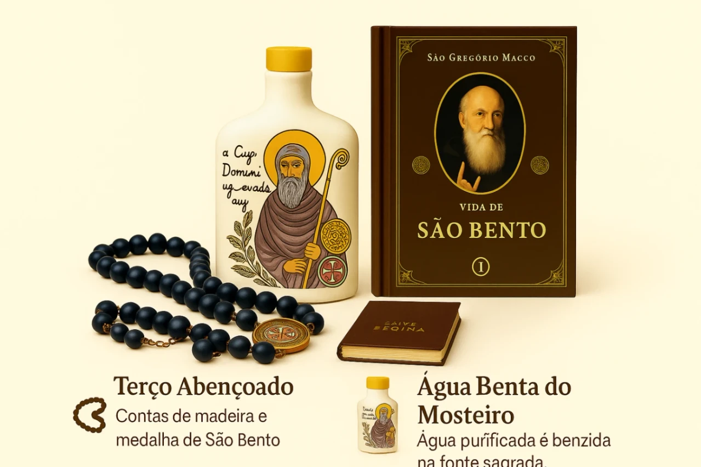
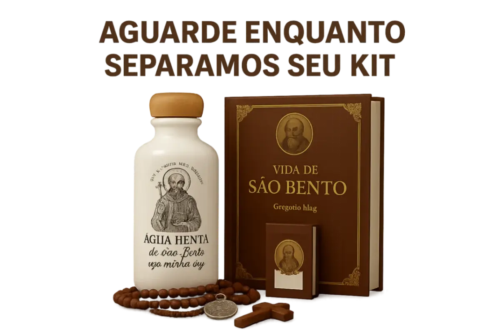

Olá, Devoto! Preparamos algo especial para fortalecer sua fé.
O Mosteiro de São Bento tem um presente para você.

Mosteiro de São Bento
O Mosteiro de São Bento é um espaço de fé e tradição que, além das celebrações, oferece itens religiosos aos fiéis para fortalecer sua devoção.
📿 (Assista o vídeo abaixo para entender sobre nossos kits). 📿
Escute o nosso querido padre.
Responda o questionário para obter seu kit devocional
📿 Como recompensa, no final do questionário você receberá um Kit de São Bento, com terço, água benta e livro, para fortalecer sua devoção!
Mosteiro de São Bento
DEVOÇÃO
ACUMULADO
25%
Quantas vezes por semana você reza o terço de São Bento?
Mosteiro de São Bento
DEVOÇÃO
ACUMULADO
55%
Você conhece a oração de São Bento para proteção?
Mosteiro de São Bento
DEVOÇÃO
ACUMULADO
85%
Você já utilizou água benta de São Bento em sua casa ou objetos?
Mosteiro de São Bento
Você é um devoto merecedor!

Sua devoção foi comprovada! Você agora tem direito a um dos 50 Kits Bênção de São Bento — um presente especial do Mosteiro para fortalecer sua fé.
Clique no botão abaixo para dar continuidade ao seu presente.
Mosteiro de São Bento
Você agora tem direito a um dos 50 Kits Bênção de São Bento — um presente especial do Mosteiro para fortalecer sua fé.
Clique no botão abaixo para resgatar seu presente!
*O kit, composto por um terço, água benta e um livro devocional, é gratuito. Para recebê-lo em sua residência, é necessário apenas o pagamento do frete, referente aos custos de envio.